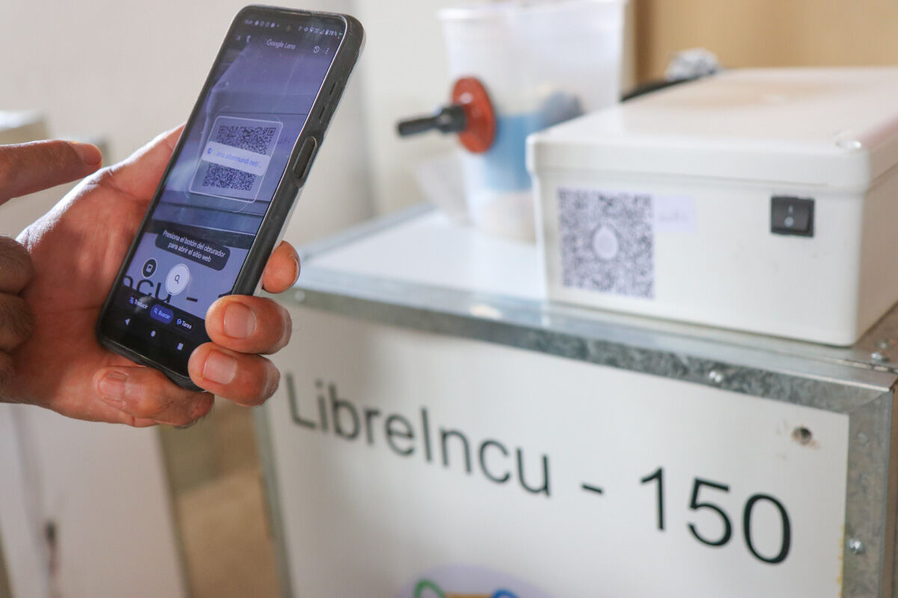
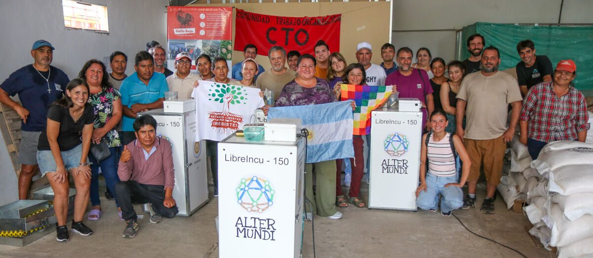
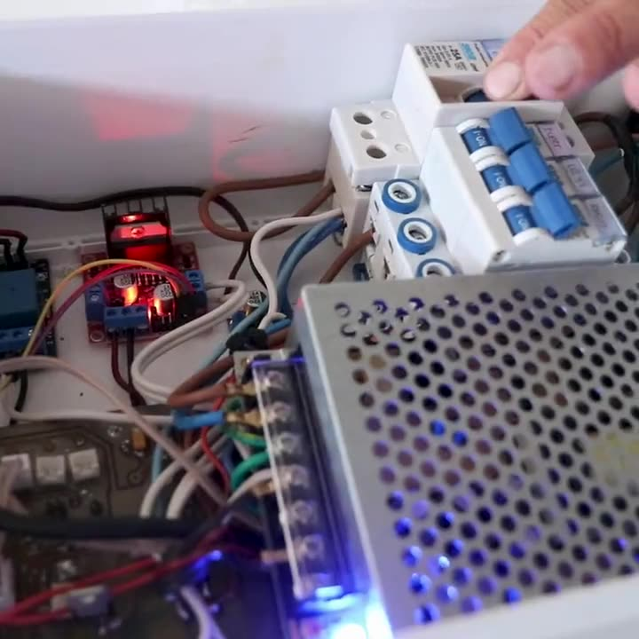
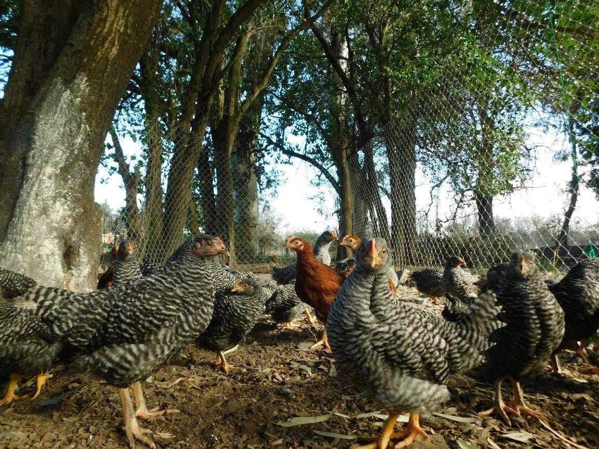

Tus propios pollitos, tu propia genética, tu propia incubadora.
Incubadora libre de 150 huevos para la producción avícola familiar
Una incubadora con 86 % de eclosión que controla con precisión las variables críticas del proceso, con un sistema de monitoreo y alarmas accesible desde tu teléfono. Tecnología de punta pensada por productores para pequeños y medianos productores. Es parte de un proyecto más grande: producir pollitos con genética y alimento propios.
Hardware libreSoftware libre

150 huevos, control automático y app en el celular. Pedí la tuya.

Soberanía tecnológica y alimentaria, construida con cooperativas y organizaciones.

Hardware, firmware, app y documentación abiertos para replicar.

Genética propia, alimentación agroecológica y buenas prácticas.